Géographie
92 fiches en français sur le thème « Géographie », prêtes à imprimer et avec corrigé.
92 ressources
Niveau
Arrondissement de Gütersloh – Fiche : texte à trous, compréhension orale et mots mêlés
Arrondissement de Neuwied – Fiche : texte à trous, compréhension orale et mots mêlés
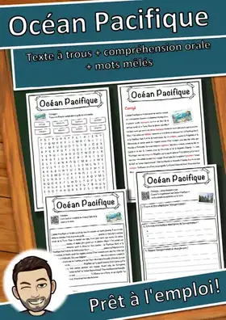
Océan Pacifique – Fiche : texte à trous, compréhension orale et mots mêlés
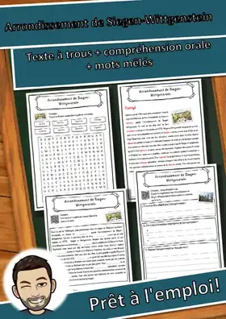
Arrondissement de Siegen-Wittgenstein – Fiche : texte à trous, compréhension orale et mots mêlés
Arrondissement de Göppingen – Fiche : texte à trous, compréhension orale et mots mêlés
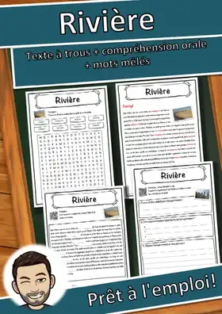
Rivière – Fiche : texte à trous, compréhension orale et mots mêlés
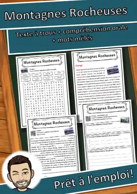
Montagnes Rocheuses – Fiche : texte à trous, compréhension orale et mots mêlés
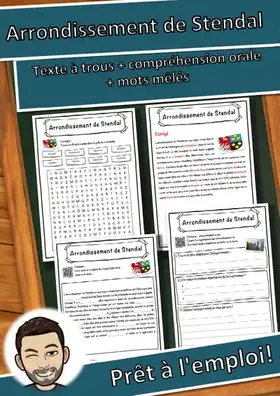
Arrondissement de Stendal – Fiche : texte à trous, compréhension orale et mots mêlés
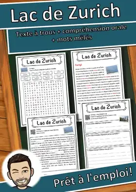
Lac de Zurich – Fiche : texte à trous, compréhension orale et mots mêlés
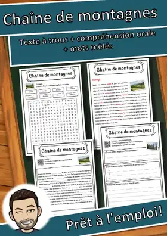
Chaîne de montagnes – Fiche : texte à trous, compréhension orale et mots mêlés
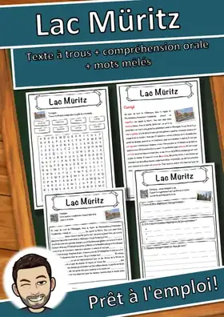
Lac Müritz – Fiche : texte à trous, compréhension orale et mots mêlés
Île artificielle – Fiche : texte à trous, compréhension orale et mots mêlés
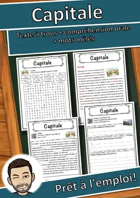
Capitale – Fiche : texte à trous, compréhension orale et mots mêlés
Lac de Garde – Fiche : texte à trous, compréhension orale et mots mêlés
Pays basque – Fiche : texte à trous, compréhension orale et mots mêlés
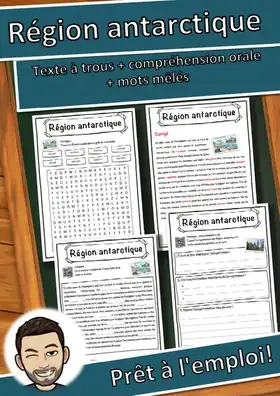
Région antarctique – Fiche : texte à trous, compréhension orale et mots mêlés
Arrondissement de Wolfenbüttel – Fiche : texte à trous, compréhension orale et mots mêlés
Arrondissement d'Augsbourg – Fiche : texte à trous, compréhension orale et mots mêlés
Arrondissement de Danube-Ries – Fiche : texte à trous, compréhension orale et mots mêlés
Arrondissement de Freudenstadt – Fiche : texte à trous, compréhension orale et mots mêlés
Arrondissement d'Eifel-Bitburg-Prüm – Fiche : texte à trous, compréhension orale et mots mêlés
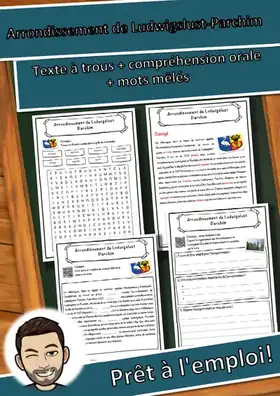
Arrondissement de Ludwigslust-Parchim – Fiche : texte à trous, compréhension orale et mots mêlés
Arrondissement de Helmstedt – Fiche : texte à trous, compréhension orale et mots mêlés
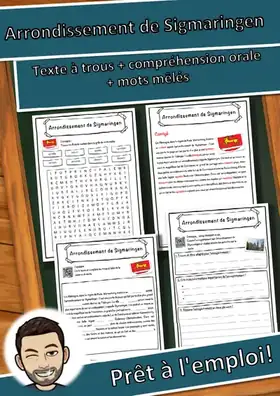
Arrondissement de Sigmaringen – Fiche : texte à trous, compréhension orale et mots mêlés
Arrondissement de Dithmarse – Fiche : texte à trous, compréhension orale et mots mêlés
Arrondissement de Bad Kreuznach – Fiche : texte à trous, compréhension orale et mots mêlés
Arrondissement de Mansfeld-Harz-du-Sud – Fiche : texte à trous, compréhension orale et mots mêlés
Arrondissement de la Börde – Fiche : texte à trous, compréhension orale et mots mêlés
Arrondissement du Burgenland – Fiche : texte à trous, compréhension orale et mots mêlés
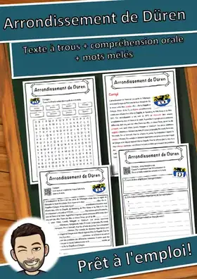
Arrondissement de Düren – Fiche : texte à trous, compréhension orale et mots mêlés
Arrondissement de Greiz – Fiche : texte à trous, compréhension orale et mots mêlés
Arrondissement d'Ahrweiler – Fiche : texte à trous, compréhension orale et mots mêlés
Arrondissement de Harbourg – Fiche : texte à trous, compréhension orale et mots mêlés
Arrondissement de Gießen – Fiche : texte à trous, compréhension orale et mots mêlés
Arrondissement de Munich – Fiche : texte à trous, compréhension orale et mots mêlés
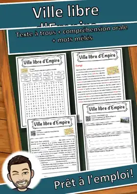
Ville libre d'Empire – Fiche : texte à trous, compréhension orale et mots mêlés
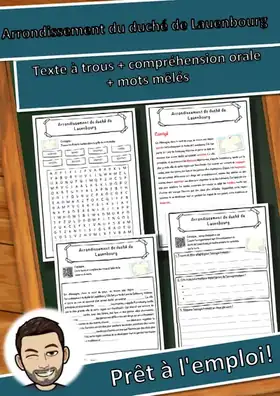
Arrondissement du duché de Lauenbourg – Fiche : texte à trous, compréhension orale et mots mêlés
Île d'Alcatraz – Fiche : texte à trous, compréhension orale et mots mêlés
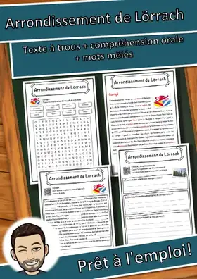
Arrondissement de Lörrach – Fiche : texte à trous, compréhension orale et mots mêlés
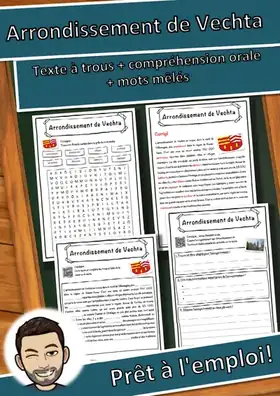
Arrondissement de Vechta – Fiche : texte à trous, compréhension orale et mots mêlés
Lac de Neusiedl – Fiche : texte à trous, compréhension orale et mots mêlés
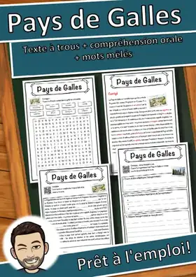
Pays de Galles – Fiche : texte à trous, compréhension orale et mots mêlés
Océan Indien – Fiche : texte à trous, compréhension orale et mots mêlés

Rivière - Fiche - texte à trous, compréhension orale et mots mêlés
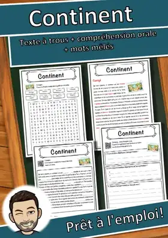
Continent – Fiche : texte à trous, compréhension orale et mots mêlés
Pays en développement – Fiche : texte à trous, compréhension orale et mots mêlés
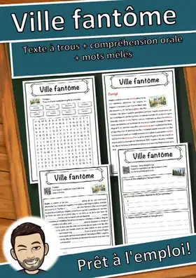
Ville fantôme – Fiche : texte à trous, compréhension orale et mots mêlés
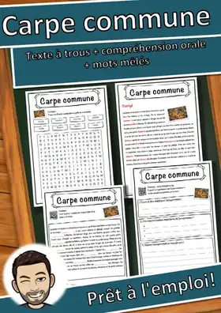
Carpe commune – Fiche : texte à trous, compréhension orale et mots mêlés
Aucune ressource trouvée – essaie un autre mot ou un autre filtre.